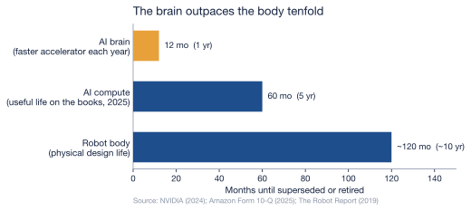

7 The Fast Hardware
Chapter 6 ended on a sting: the generation of robots now being bought is already scheduled for obsolescence — not because of any buyer’s temperament, but because the hardware itself iterates at the speed of consumer electronics. This chapter follows that acceleration, and to do so it has to take a humanoid apart into the two machines it really is. There is a body — a frame, actuators, sensors, a battery — engineered the way industrial machinery has always been engineered, to last. And bolted into that body is a brain — the onboard AI compute and the model it runs — built on the opposite premise, to be surpassed within a year. The two halves keep different time. The argument of this chapter is that when you fasten them together, the faster clock wins, and it drags the whole machine’s useful life down with it.
7.1 The brain’s clock
The pace of the brain is not set by the robot at all. It is set by the frontier of artificial intelligence, and that frontier is moving at a rate with few precedents in industrial history. Epoch AI, the research group that specializes in measuring the compute behind frontier AI, finds that the training compute behind frontier models has grown roughly 5.3 times per year between 2010 and mid-2024 — and even after a deceleration around 2018, still climbs about 4.2 times a year, which is to say the compute defining the state of the art roughly doubles every five to seven months (Epoch AI, 2024). A robot’s intelligence does not have to degrade for it to fall behind; the target it is measured against simply recedes that fast. That figure describes the pace of the frontier, not the decay of any single chip — what ties it to a particular robot is the release cadence of the hardware built to chase it.
And the hardware built to chase that frontier keeps the same relentless beat. At Computex 2024, NVIDIA’s chief executive Jensen Huang described the company’s release schedule in plain terms: “Our company has a one-year rhythm. Our basic philosophy is very simple: build the entire data center scale, disaggregate and sell to you parts on a one-year rhythm, and push everything to technology limits” (NVIDIA, 2024b). The roadmap he laid out — Hopper, Blackwell, Rubin, and the refreshed parts between them — puts a faster accelerator on the market every year. A humanoid’s “brain” is built from this same lineage of AI silicon — a smaller, embedded cousin of the data-center part — paired with a foundation model of the kind NVIDIA itself launched for robots in 2024 (NVIDIA, 2024a). Both halves of that brain — the chip and the model — are designed to be eclipsed on a twelve-month cadence. The compute does not wear out. It gets outclassed.
7.2 The body’s clock
The body runs on the opposite premise. A humanoid is, mechanically, a dense assembly of precision actuators — Chapter 2 put them at more than half of the entire bill of materials — built to the tolerances of industrial machinery (Bank of America Institute, 2026). And industrial machinery is engineered to last: the arms it descends from are advertised with mean time between failures as high as 100,000 operating hours, and the real-world factory data from Chapter 4 show that when a robot cell does stop, the arm itself is almost never the thing that broke (The Robot Report, 2019). A well-maintained industrial robot earns its keep over a decade or more. That is the design intent written into the body of a humanoid: years of service, slow depreciation, mechanical endurance.
So the machine carries two clocks that disagree by an order of magnitude. The body is built for roughly a decade; the brain is built to be lapped in about a year. Nothing in engineering forces those two numbers to converge — and that is precisely the problem.
7.3 Two clocks, one machine
Read the chart and the pressure is plain: the shortest clock sets the ceiling on the rest. Whether any particular machine is retired early is, of course, an economic decision — the same capital-conservative buyers who run an industrial arm for a decade do not scrap working equipment on a whim, which is exactly why the body lasts as long as it does. But the chapter’s claim is narrower and harder to dodge: the question governing that decision shifts off the body and onto the brain. It stops being “does the machine still work” — for fast hardware it almost always does — and becomes “is the intelligence inside it still worth deploying against a frontier that has moved.” When a newer model does a job the older one cannot, the decade of mechanical life still left in the older body is stranded rather than redeemed. That is what “fast hardware” means in a humanoid: the speed does not belong to the body — the slow, durable, expensive half — but to the brain bolted inside it, and it is the brain’s obsolescence, not the body’s wear, that increasingly decides when the unit is replaced.
That is a different and more aggressive failure mode than the one Chapter 4 examined. There the question was whether the machine works; here the machine can work perfectly and still be retired, because something better exists. Reliability sets a floor under a robot’s life. Obsolescence sets a ceiling — and for fast hardware the ceiling is far lower than the floor.
7.4 The market is already shortening the clock
This is not a forecast. It is already visible in the accounts of the companies that own the most AI compute on earth. For years the hyperscalers stretched the assumed life of their hardware: Microsoft, after a review in July 2022, lengthened the useful life of its server and network equipment from four years to six, citing “investments in software that increased efficiencies … as well as advances in technology” (Microsoft Corporation, 2023). Amazon followed the same logic, extending its servers from five years to six effective January 2024 — a change worth about $3.2 billion in reduced depreciation and $2.5 billion in added net income that year (Amazon.com, Inc., 2025a). The bet was that the hardware would stay useful longer.
Then the bet reversed. Effective January 1, 2025, Amazon shortened the useful life of a subset of its servers and networking equipment back from six years to five — and stated the reason in its own filing with the Securities and Exchange Commission.
| Date effective | Company | Server useful life | Stated reason |
|---|---|---|---|
| Fiscal year 2023 | Microsoft | 4 → 6 years | efficiency gains and “advances in technology” |
| Jan 1, 2024 | Amazon | 5 → 6 years | longer life assumed (≈$3.2 B less depreciation that year) |
| Jan 1, 2025 | Amazon | 6 → 5 years | “the increased pace of technology development, particularly in the area of artificial intelligence and machine learning” |
The reversal cost Amazon $217 million in additional depreciation in the first quarter of 2025 alone (Amazon.com, Inc., 2025b). The number matters less than the admission behind it. The most sophisticated owners of AI compute in the world have just told their auditors that this hardware lasts less time than they thought a year earlier, and they have named the cause: the pace of AI. These are data-center servers, not humanoids — but a humanoid’s brain is built from the same restless lineage of AI silicon, and it inherits the same shortening clock. When Amazon writes down the working life of an accelerator, it is describing the brain that will sit inside the next warehouse robot.
7.5 The escape that isn’t quite an escape
The obvious engineering answer is modularity: make the brain a swappable card, upgrade the compute on its fast cycle, and keep the slow, durable body for its full decade. It is a real mitigation, and an honest account has to grant it. A genuinely modular compute module would decouple the two clocks for the part that is swapped, and it is the obvious thing for a designer to want.
But it decouples less than it promises, for two reasons. First, the brain is not only the compute card. A frontier model demands matching sensors, actuator bandwidth, and power, and Chapter 4 showed the binding limit is already physical — today’s humanoids run roughly two hours on a charge (Bain & Company, 2025). A body specified in 2026 may simply not be able to host the sensing and power budget a 2030 model assumes, no matter what card you slot into it; the halves co-evolve, and the body can fall behind on its own terms. Second, even where the swap works cleanly, it does not make the obsolescence disappear — it relocates it. The superseded compute still leaves the machine and still enters the waste stream, just as a module rather than a whole robot. Modularity changes the shape of the discard. It does not cancel it.
The generation of humanoids now being built, then, will be outclassed long before it is worn out — and the market that owns their kind of brain is already shortening the life it assigns to them. That leaves a question this chapter cannot answer and the next one must: what becomes of a decade’s worth of barely-used bodies, and of the fast-obsoleting brains stripped out and thrown after them? The machines are about to start coming off the line faster than they wear out. The chapters that follow track where they go when they do — into the e-waste wave.